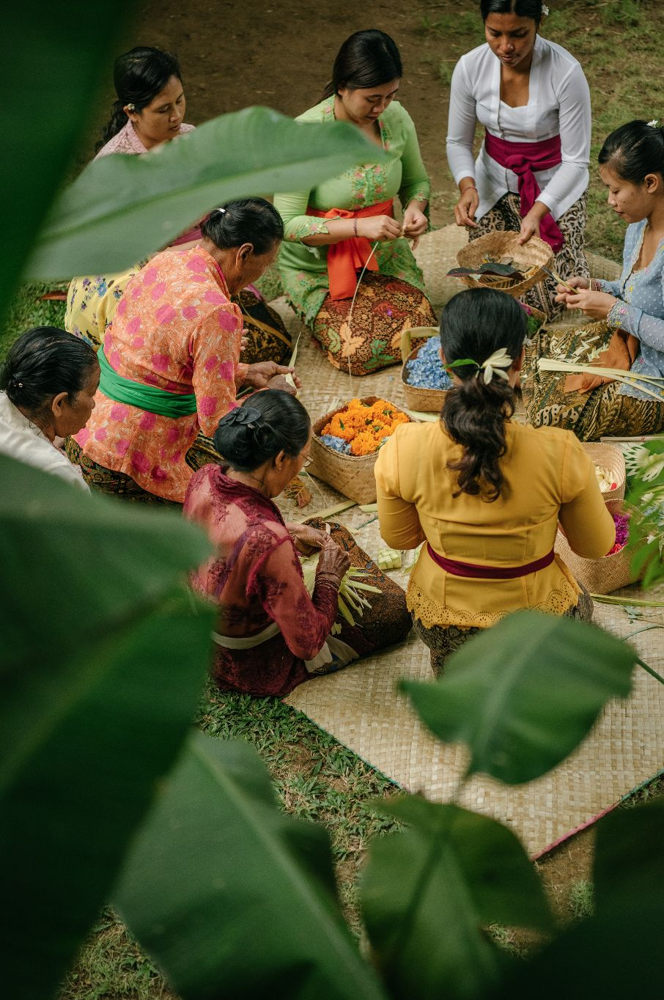
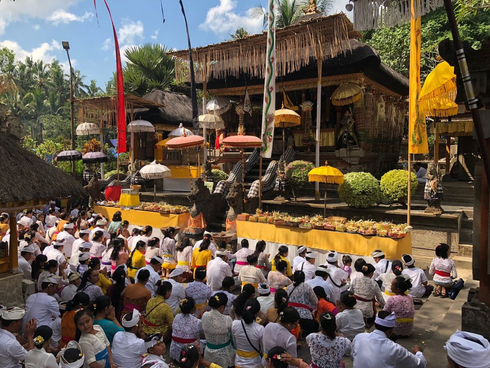
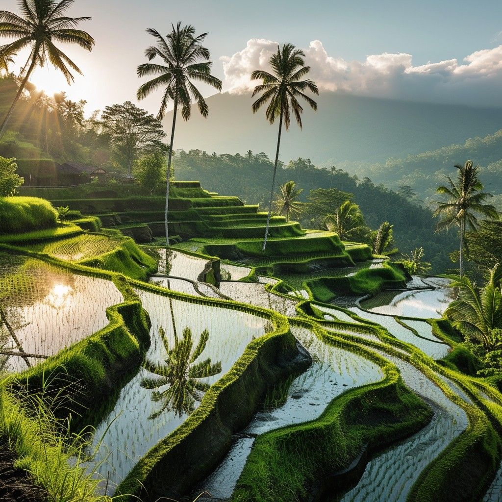

Tri Hita Karana: Tiga Pilar Kebahagiaan
Kehidupan masyarakat Bali berpusat pada filosofi Tri Hita Karana, yang secara harfiah berarti "Tiga Penyebab Kebahagiaan". Filosofi ini menekankan pentingnya menjaga hubungan yang harmonis dalam tiga dimensi: Parahyangan (hubungan manusia dengan Tuhan), Pawongan (hubungan manusia dengan sesamanya), dan Palemahan (hubungan manusia dengan alam lingkungannya).

Konsep inilah yang menjadi fondasi dari setiap aspek kehidupan, adat, dan budaya di Bali. Anda dapat melihat manifestasi nyatanya dalam arsitektur rumah tradisional Bali yang selalu memiliki pura keluarga (parahyangan), area hunian (pawongan), dan taman atau kebun (palemahan). Bahkan sistem irigasi sawah subak yang terkenal adalah penerapan Tri Hita Karana dalam pengelolaan pertanian.
Yang membuat filosofi ini begitu kuat adalah bahwa ia bukan sekadar konsep abstrak yang dipelajari di sekolah, tetapi prinsip hidup yang diterapkan secara praktis setiap hari. Ketika seorang Bali membangun rumah, merencanakan upacara, atau bahkan sekadar berinteraksi dengan tetangga, mereka selalu mempertimbangkan ketiga elemen ini untuk mencapai keseimbangan.
Struktur Sosial: Catur Warna
Masyarakat Bali menganut sistem Catur Warna, yang merupakan klasifikasi sosial berdasarkan fungsi dan profesi dalam masyarakat. Sistem ini sering disalahpahami sebagai kasta yang kaku seperti di India, padahal dalam praktiknya jauh lebih fleksibel dan fungsional.

Catur Warna terdiri dari empat kelompok: Brahmana (pendeta dan rohaniwan), Ksatria (bangsawan dan pemimpin pemerintahan), Waisya (pedagang dan pengusaha), dan Sudra (rakyat biasa, petani, dan pekerja). Yang menarik, sekitar 90% populasi Bali termasuk dalam kelompok Sudra, sehingga sistem ini tidak menciptakan hierarki yang opresif seperti yang sering dibayangkan.
Dalam kehidupan modern, sistem ini lebih berfungsi sebagai identitas kultural daripada penentu status sosial ekonomi. Seorang Sudra bisa menjadi pengusaha sukses atau pejabat pemerintah, sementara seorang dari kasta lebih tinggi bisa bekerja sebagai petani. Yang membedakan adalah terutama dalam konteks upacara keagamaan dan penggunaan bahasa tingkat tutur (Anggah-Ungguh Basa).
Banjar: Jantung Kehidupan Komunal
Banjar adalah organisasi kemasyarakatan tingkat desa yang menjadi ujung tombak kehidupan sosial di Bali. Setiap keluarga Bali secara otomatis menjadi anggota banjar di wilayahnya, dan keanggotaan ini membawa hak serta kewajiban yang sangat konkret.

Banjar mengatur hampir semua aspek kehidupan komunal: dari mengorganisir upacara keagamaan, gotong royong membersihkan desa, mengatur keamanan lingkungan, hingga membantu anggota yang sedang menghadapi kesulitan seperti kematian, pernikahan, atau bencana. Sistem ini menciptakan jaring pengaman sosial yang sangat kuat tanpa perlu bergantung pada pemerintah.
Setiap banjar memiliki balai pertemuan sendiri yang disebut bale banjar, tempat anggota berkumpul untuk membahas urusan komunal, latihan gamelan, atau sekadar bersosialisasi. Pertemuan banjar biasanya diadakan secara rutin—ada yang sebulan sekali, ada yang lebih sering—dan kehadiran anggota sangat diharapkan. Ketidakhadiran tanpa alasan yang jelas bisa dikenai sanksi berupa denda atau kerja sosial.
Yang menarik dari sistem banjar adalah sifatnya yang demokratis. Keputusan penting diambil melalui musyawarah dan mufakat, bukan oleh satu orang pemimpin. Kepala banjar (kelian banjar) dipilih oleh anggota dan fungsinya lebih sebagai koordinator daripada penguasa. Jika ada masalah atau konflik dalam komunitas, banjar berfungsi sebagai mediator dan pengambil keputusan yang adil.
Subak: Demokrasi Air yang Mendunia
Subak adalah sistem irigasi sawah tradisional Bali yang telah diakui UNESCO sebagai Warisan Budaya Dunia pada tahun 2012. Lebih dari sekadar sistem teknis pengelolaan air, subak adalah manifestasi sempurna dari Tri Hita Karana dalam pertanian.


Setiap petani yang sawahnya mendapat air dari satu sumber yang sama otomatis menjadi anggota subak. Mereka secara kolektif mengatur pembagian air yang adil, menentukan jadwal tanam yang seragam (untuk efisiensi air dan pengendalian hama), dan mengatur upacara keagamaan di pura-pura sawah yang tersebar di berbagai titik sistem irigasi.
Yang luar biasa dari subak adalah sistem ini telah berjalan dengan sangat efektif selama lebih dari seribu tahun tanpa banyak perubahan fundamental. Tidak ada otoritas terpusat yang mengatur—semuanya dikelola secara demokratis oleh anggota subak sendiri. Air dibagi bukan berdasarkan siapa yang paling kuat atau kaya, tetapi berdasarkan kebutuhan dan kesepakatan bersama.
Penelitian ilmiah modern telah membuktikan bahwa sistem subak adalah model pertanian yang sangat efisien dan berkelanjutan. Ia tidak hanya mengoptimalkan penggunaan air, tetapi juga mencegah ledakan hama melalui pola tanam yang terkoordinasi, menjaga kesuburan tanah melalui rotasi yang tepat, dan menciptakan ekosistem sawah yang sehat dan produktif.